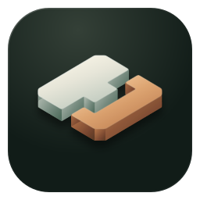
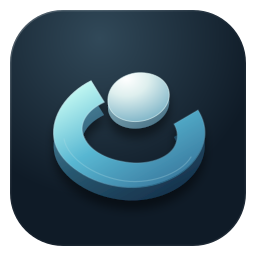
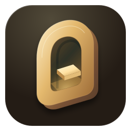
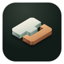
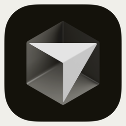
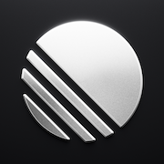
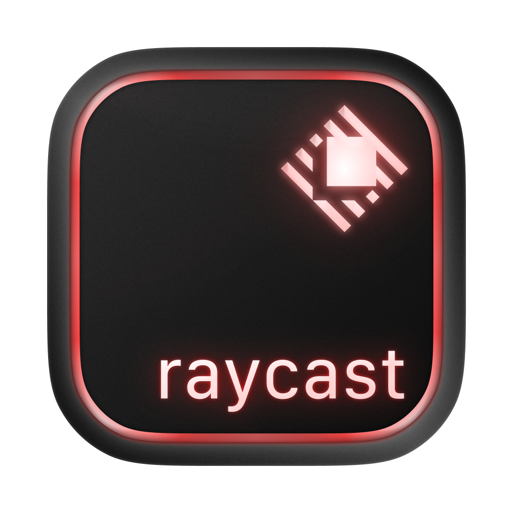

A / JOINERY已选定

工坊榫接
两块构件，拼成一处工坊。把 Agent、模型与工具，接进自己的创作流程。
陶瓷白 / 暖铜
浅背景

深背景实际尺寸PX
ICON STUDIES / 01
用户已选定 A「工坊榫接」。
查看正式图标与下载 →

两块构件，拼成一处工坊。把 Agent、模型与工具，接进自己的创作流程。
陶瓷白 / 暖铜

深背景
弧形承托一枚核心，像停靠与汇合。对应统一入口与模型路由。
冰蓝 / 银白

深背景
拱形空间里亮起一处工作面。一个安静、专注的个人创作空间。
暖金 / 石墨

深背景




四款产品图标用于观察轮廓与色彩是否容易混淆。官方图片来源 ↗